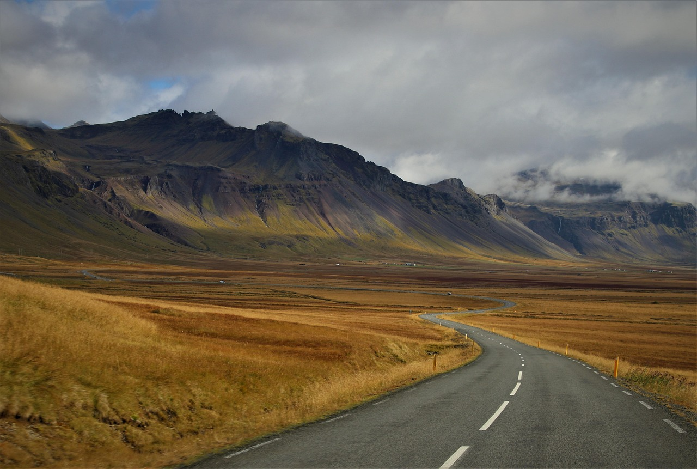
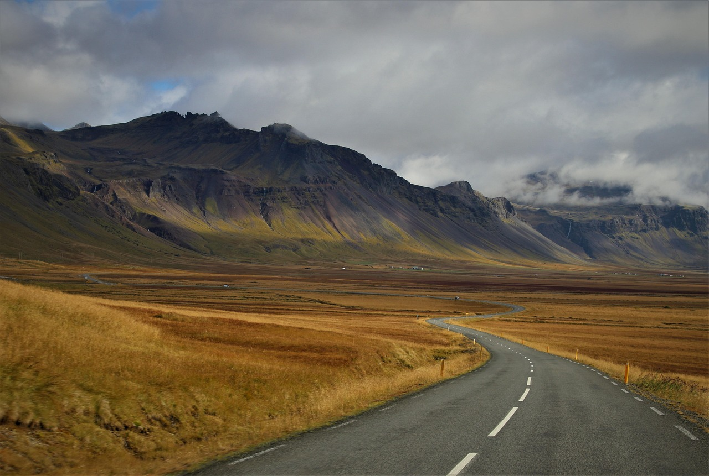

Exploring Istanbul's Hidden Gems
Istanbul blends East and West with ancient markets, majestic mosques and cozy cafes. Our 3-day journey took us through the historic Sultanahmet district and the bustling Grand Bazaar.
 

Istanbul blends East and West with ancient markets, majestic mosques and cozy cafes. Our 3-day journey took us through the historic Sultanahmet district and the bustling Grand Bazaar.
We walked through the serene Arashiyama bamboo forest at dawn. The rustling of bamboo leaves felt meditative. Don't miss the matcha tea houses nearby!